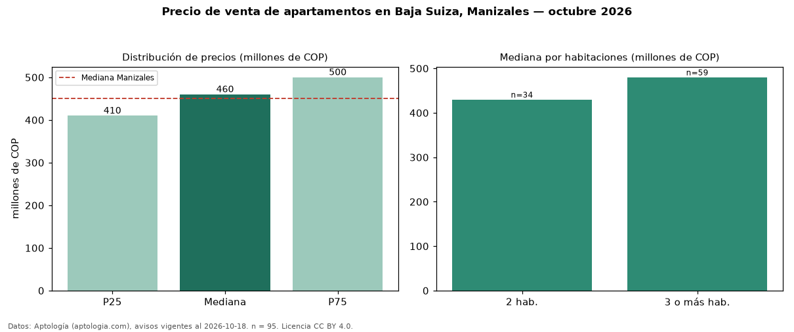

Precio de venta de apartamentos en Baja Suiza, Manizales — octubre 2026
Con 95 avisos vigentes, el precio mediano de apartamentos en venta en Baja Suiza, Manizales es COP 460 millones. Prácticamente coincide con la mediana de Manizales para apartamentos (COP 450 millones). Por metro cuadrado, la mediana es COP 7,14 millones/m² (n = 94 avisos con área), 26 % por encima de Manizales (COP 5,65 millones/m²). El área mediana anunciada es 63 m². El segmento con más oferta es el de 3 o más habitaciones (59 avisos, mediana COP 480 millones); pasar de 2 habitaciones a 3 o más habitaciones cambia la mediana +12 %. La administración mediana declarada es COP 294.500 al mes (n = 60). Por precio mediano es el puesto 12 de 22 barrios de Manizales con al menos 30 avisos de apartamentos en venta (COP): en la franja media. El estrato más frecuente es 4 (48 % de los avisos con estrato). Datos: Aptología (aptologia.com), CC BY 4.0 — https://www.aptologia.com/venta/manizales/baja-suiza. Archivos: PDF, CSV con las cifras y gráfica PNG.

| Avisos únicos | 95 |
|---|---|
| Percentil 25 | COP 410.000.000 |
| Mediana | COP 460.000.000 |
| Percentil 75 | COP 500.000.000 |
| Mediana por m² | COP 7.142.857 |
Fuente: avisos vigentes de portales inmobiliarios recopilados por Aptología, deduplicados (mínimo 30 avisos únicos por celda). Precios pedidos, no cerrados. Fecha: 2026-10-18.